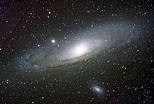

En 1610, Galileo Galilei usó un telescopio para estudiar la cinta de aspecto lechoso en el cielo nocturno llamada Vía Láctea, y descubrió que está compuesta por una inmensa cantidad de pequeñas estrellas. En el año 1755, Immanuel Kant teorizó sobre la estructura y las agrupaciones de estrellas en el tratado Historia general de la naturaleza y teoría del cielo, basado en un trabajo previo de Thomas Wright. Kant afirmaba que la Vía Láctea era un sistema formado por miles de sistemas solares como el nuestro, agrupados en una estructura de orden superior y de características similares a las de los sistemas planetarios, sensiblemente plana, de forma elíptica, en movimiento de rotación alrededor de un centro y regidas por la misma mecánica celeste. También supuso que, por el punto de vista desde el que observamos la Vía Láctea y por la densidad de estrellas visibles que agrupa, nuestro sol se encuentra en su mismo plano y forma parte de ella. Desde un planteamiento completamente teórico, Kant afirmó que era lógico suponer la existencia de otros planetas y satélites orbitando alrededor de otras estrellas, y que debían existir otras «Vías Lácteas» separadas a distancias de un orden de magnitud comparable a su vasto tamaño. Según su razonamiento, estas galaxias o universos isla teóricos serían visibles desde la Tierra como nubes ovaladas de luz tenue, sin que fuera posible distinguir las estrellas individuales dentro de ellas. Kant las identifica con ciertos tipos de nebulosas, que Pierre Louis Maupertuis describió como «pequeños lugares cuya luz es sólo un poco mayor que la oscuridad del espacio celestial, todas ellas con el aspecto de elipses más o menos abiertas, pero cuya luz es mucho más débil que cualquier otra que conozcamos en el cielo».
Hacia el final del siglo xviii, las galaxias no habían sido descubiertas. Charles Messier compiló un catálogo (catálogo Messier) que contenía 103 objetos astronómicos, que él denominó «nebulosas y cúmulos de estrellas». Más tarde William Herschel elaboró un catálogo que contenía unos 2500 «objetos del espacio profundo». En 1845, Lord Rosse construyó un nuevo telescopio, con el cual consiguió distinguir las «nebulosas» elípticas de las circulares. Este telescopio permitía ver de manera parcial para poder distinguir[aclaración requerida] en algunas de estas «nebulosas» fuentes puntuales individuales de luz, confirmando de manera parcial las anteriores conjeturas de Kant.

En 1917, Heber D. Curtis había observado la nova S Andrómeda, en la «nebulosa» de Messier M31. Buscando en los registros fotográficos, encontró otras 11 novas y observó que, en promedio, estas novas eran 10 órdenes de magnitud más débiles que las ocurridas en nuestra galaxia. Como resultado de esta observación pudo predecir que dichas novas se debían encontrar a una distancia de 150 000 parsecs. Heber se convirtió en un célebre defensor de la hipótesis de los «universos isla», que sostenía que las «nebulosas espirales» eran realmente galaxias independientes.
En 1920 ocurrió el gran debate entre Harlow Shapley y Heber Curtis en torno a la naturaleza de nuestra galaxia, las «nebulosas espirales» y la dimensión del universo. Para defender la afirmación de que M31 era una galaxia externa, Curtis argumentaba que las líneas obscuras observadas en dicha «nebulosa» eran similares a las nubes de polvo que se observan en la nuestra, Vol. 5 (1925). Usar un nuevo telescopio le permitió a Edwin Hubble resolver las partes exteriores de algunas «nebulosas espirales» como colecciones de estrellas individuales. Más aún, Hubble pudo identificar en esas estrellas algunas variables cefeidas y éstas le permitieron estimar la distancia a dichas «nebulosas». Resultó que estaban demasiado alejadas para ser parte de la Vía Láctea. En 1936, Hubble organizó un sistema de clasificación de galaxias que todavía se usa en nuestros días: la secuencia de Hubble.
El primer intento de describir la forma que tiene la Vía Láctea fue llevado a cabo por William Herschel en 1785, contando cuidadosamente el número de estrellas en distintas regiones del cielo. En 1920 Kapteyn, usando un refinamiento de la técnica empleada por Herschel, sugirió la imagen de una pequeña galaxia elipsoidal (15 kiloparsecs de diámetro), con el Sol cerca del centro. Con un método diferente, basado en la distribución de los cúmulos globulares, realizado por Harlow Shapley, emergió una imagen radicalmente distinta: un disco plano con un diámetro aproximado de 70 kiloparsecs y con el Sol alejado de su centro. Ninguno de los dos análisis tomó en cuenta la absorción de la luz y el polvo interestelar presentes en el plano galáctico. Robert Julius Trumpler tomó en cuenta estos efectos en 1930, estudiando cúmulos abiertos y produciendo la imagen que actualmente se acepta de nuestra galaxia: la Vía Láctea es una galaxia espiral con un diámetro aproximado de 30 kiloparsecs.